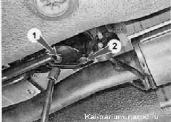
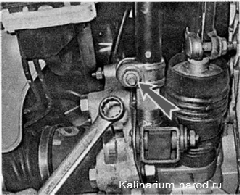
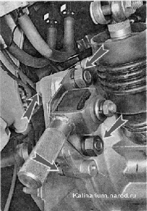

Реактивная тяга снятие и установкаВнимание! Работу выполняем после остывания дополнительного глушителя до безопасной температуры. Для выполнения работы потребуется смотровая канава или эстакада Снятие 1. Подготавливаем автомобиль к выполнению работы. 2. Очищаем резьбовые соединения реактивной тяги металлической щеткой и обрабатываем проникающей смазкой. 3. Торцовым ключом на 13 мм отворачиваем один из болтов 1 крепления реактивной тяги к основанию шаровой опоры рычага переключения передач. Другой болт 2 отворачиваем накидным ключом на 13 мм (доступ к нему ограничен деталями системы выпуска отработавших газов). 
4. Ключом на 13 мм ослабляем затяжку хомута реактивной тяги. Отсоединив от тяги ее наконечник, снимаем тягу  5. При необходимости торцовым ключом на 19 мм отворачиваем две гайки крепления кронштейна реактивной тяги, удерживая головки болтов ключом того же размера. Снимаем кронштейн в сборе с наконечником реактивной тяги.  Установка Устанавливаем реактивную тягу в обратной последовательности. |